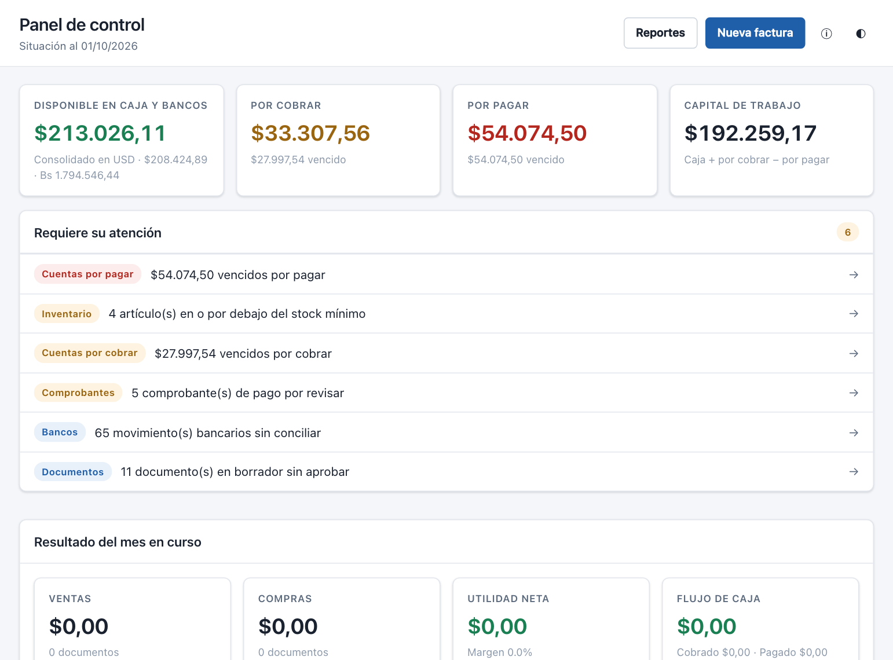
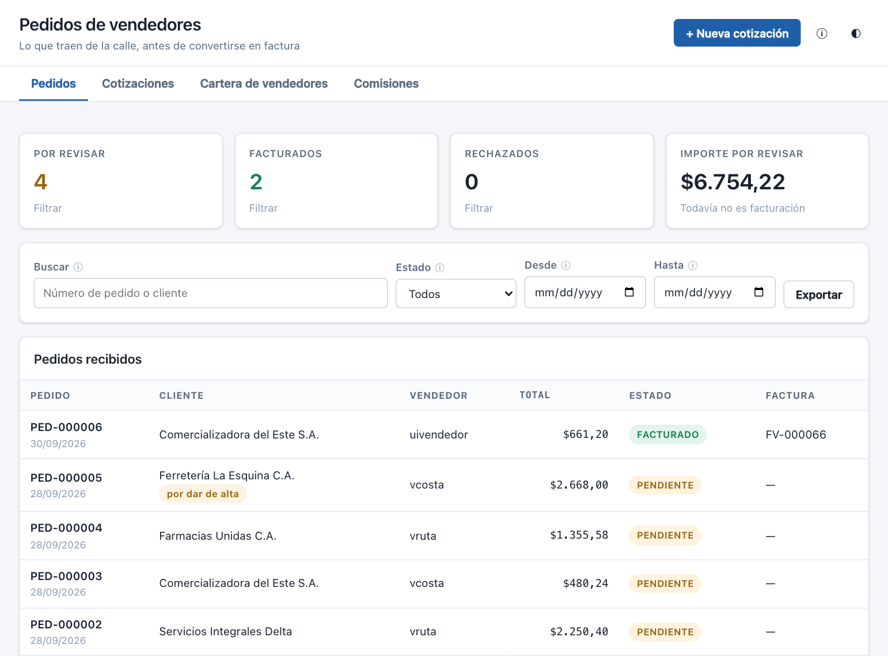
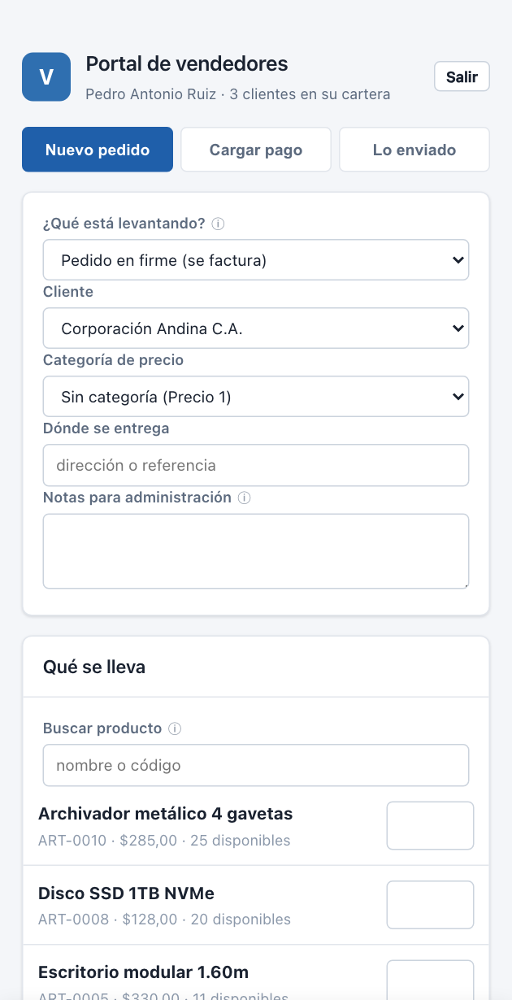
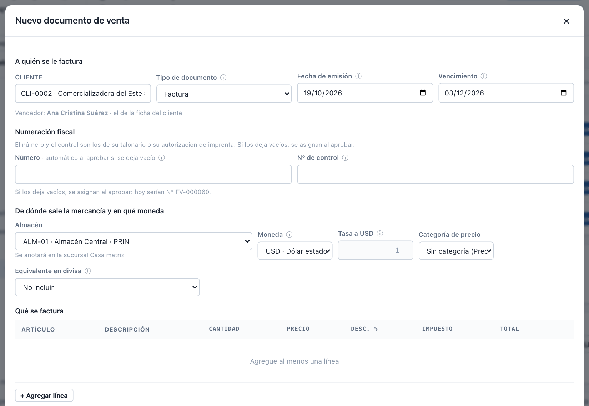
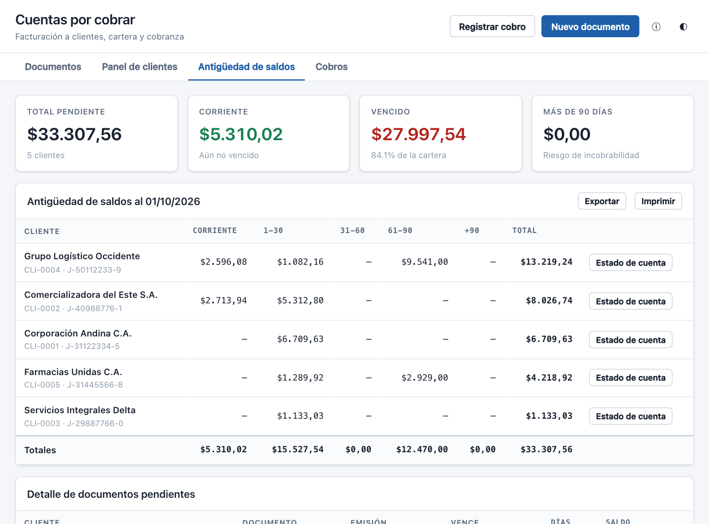
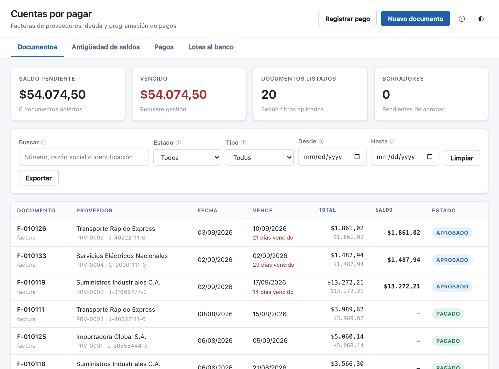
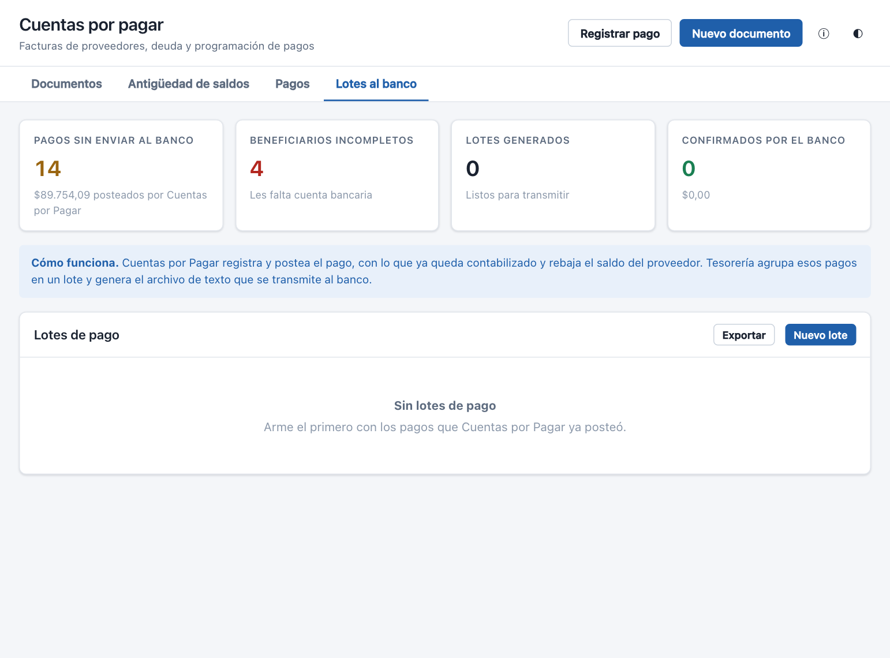
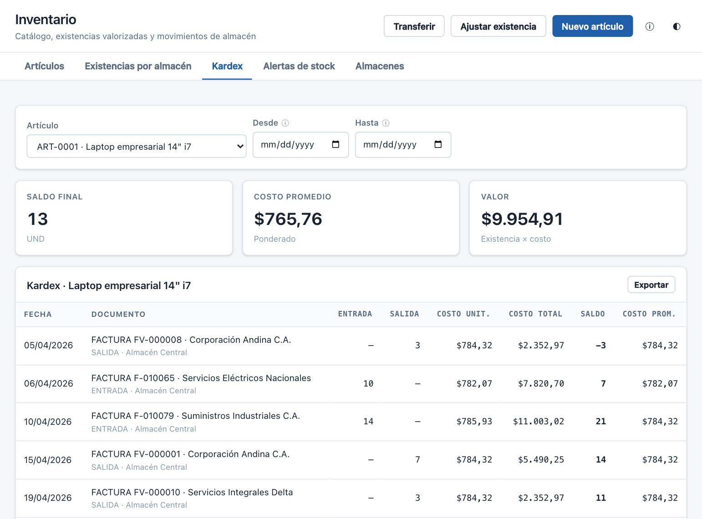
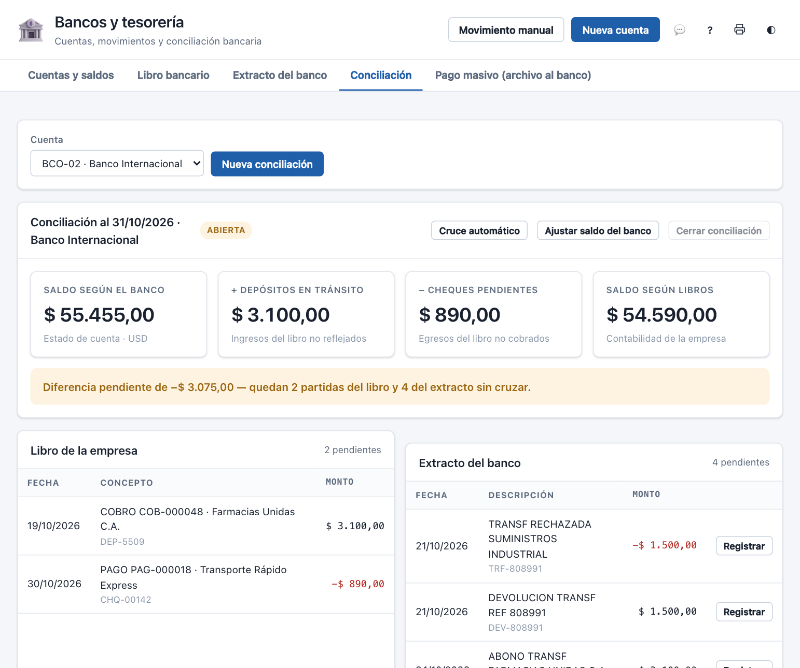
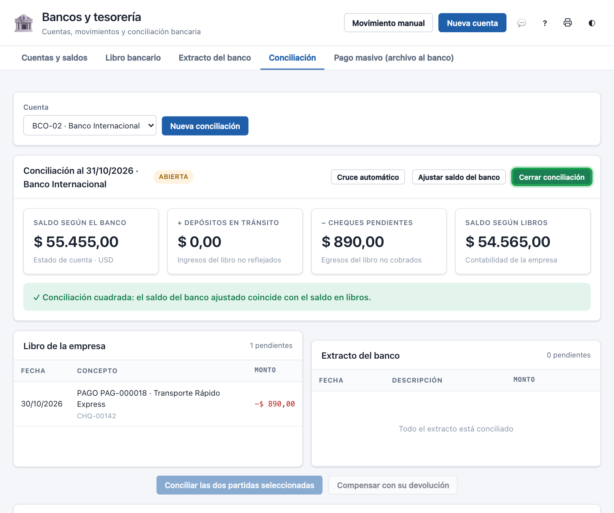

GesPro Administrativo
en Acción
Del primer contacto con el cliente hasta la conciliación bancaria en cero — sin hojas de cálculo duplicadas ni cierres eternos.
¿Cuántos archivos de Excel tendrías que abrir hoy?
Si la gerencia entra ahora mismo y pregunta: ¿cuánto nos deben, qué vendimos hoy y cuánto hay real en cada banco?
Cómo vamos a aprender hoy (cero aburrimiento)
⚡ 20 % Video / Idea clave
Cápsulas cortas de 1 a 5 min + una historia real de empresa que conecta los 6 módulos de principio a fin.
🚨 20 % Demo + Trampa
En cada módulo provocaremos un error clásico en pantalla para que el equipo lo detecte antes de practicar.
🛠️ 60 % Manos a la obra
Cada equipo compite en la 🏆 Copa GesPro: +10 pts por Reto Práctico y +5 pts por Trivia Relámpago.
3 Reglas de Oro
y 3 Salvavidas
- BORRADOR ≠ Contabilidad: En borrador editas y borras sin gastar número. APROBAR mete la operación en libros e inventario.
- Nunca se borra, se anula por reverso: El historial siempre cuadra y queda auditado.
- Tus 3 salvavidas en pantalla: ícono ⓘ en cada campo, botón ? (Ayuda IA) arriba y Manual de usuario en el menú.

Ventas sin Fugas
Vendedor (CRM) · Cotizaciones · Pedidos y Reservas 24h · Punto de Venta (POS) · Tienda en Línea · Portal Móvil
Del Prospecto al Pedido en Firme
- CRM ordenado: Prospectos puntuados (0–100: 🔥 Caliente ≥70), Embudo arrastrar y soltar, Agenda y Clientes 360.
- Cotizaciones blindadas: No cotiza sin existencia; validez en grande en PDF; descuentos ≥25 % / 50 % / 75 % piden aprobación por GP Mensajes.
- Mercancía apartada 24 h hábiles: Al aceptar la cotización nace el Pedido y bloquea ese stock para que nadie más lo venda.
- Comisiones sin discusión: Calculadas sobre monto SIN IVA, por vender y/o cobrar.

Mostrador, Tienda Web y Calle
🖥️ Punto de Venta (POS)
Pago mixto multimoneda + vuelto + IGTF automático + impresora térmica/gaveta. ¿Se cayó internet? Sigue vendiendo con comprobante PRV-… y factura solo al volver la red.
🛒 Tienda en Línea
Stock real, cupones de descuento y pagos con Stripe, PayPal, Binance Pay y Pago Móvil C2P Mercantil verificados solos.
📱 Portal de Vendedores (/vendedores)
Asistente «Mi día», pedidos en calle, carga de comprobantes y «Contar la visita» (dictado por voz IA).

Manos a la Obra + Trivia Relámpago
🛠️ Reto 1: «La Venta Relámpago» (20 min · +10 pts)
- Crea 1 Prospecto en CRM con tus iniciales y agéndale llamada.
- Emite 1 Cotización (2 artículos, validez 5 días) y descarga su PDF.
- Pulsa «El cliente la aceptó» y anota el número de Pedido
PED-…. - Abre turno en POS y registra 1 venta con 2 formas de pago.
Cuentas por Cobrar
al Día
Facturación blindada · Numeración fiscal · IGTF 3 % · Retenciones recibidas · Portal de Clientes · Cartera inteligente
Facturar con Seguridad Fiscal
- Pedidos por facturar: Convierte pedidos a borrador en 1 clic sin volver a teclear nada.
- Numeración limpia: En
BORRADORno gasta serie; al Aprobar asigna N° factura y N° control consecutivos. - Repaso de precios + Divisa: Avisa con
⚠si el precio difiere de la lista; guarda fija la tasa BCV en Equivalente en divisa (Art. 25). - Factura no impresa por error: Solo si es la última y no salió, Admin puede usar Eliminar (no impresa); si no, siempre Anular.
0 = SIN TOPE. Para frenar desde la primera vencida escribe 1 (destraba Gerencia en Autorizaciones, para UNA sola factura).
Cobros, Retenciones y Cartera
- IGTF 3 % automático: En cobros en divisas de contribuyentes especiales, $103 cubren $100 de factura + $3 de IGTF.
- Retenciones recibidas: Cobra el neto en banco y carga el comprobante de 14 dígitos en Retenciones recibidas → directo al Libro de Ventas.
- Portal de clientes (QR en factura): El cliente reporta su pago sin clave → cae en Comprobantes de pago (verifica en banco antes de aplicar).
- A quién llamar hoy: Antigüedad de saldos, Panel de clientes (alerta concentración >70 %) y Reporte por cliente (días reales de pago).

Manos a la Obra + Trivia Relámpago
🛠️ Reto 2: «Del Pedido al Dinero» (25 min · +10 pts)
- Convierte tu pedido
PED-…desde Pedidos por facturar y Aprueba la factura. - Abre el PDF e identifica el código QR del Portal de Clientes al pie.
- Registra un cobro parcial del 50 % con referencia exacta (ej.
COB-EQ1-101). - Carga 1 Retención recibida de IVA (14 dígitos) por el 75 % del IVA y busca al cliente más moroso en Antigüedad.
Cuentas por Pagar
sin Teclear Doble
Importar facturas con IA · Comprobante previo CPR · Retenciones IVA e ISLR (Decreto 1.808) · Reintegros · Lotes al Banco
IA + Retenciones sin Errores
- 🚀 Importar factura con IA: Sube el PDF o foto (hasta 8 MB). Lee RIF, N°, control, fecha y renglones creando el Borrador con el original adjunto.
- Comprobante previo (
CPR-…): Nace al guardar el borrador con un enlace de 30 días para que el proveedor valide el neto antes de asentar. - Retenciones IVA e ISLR automáticas: Tabulador Decreto 1.808 completo (incluye Tarifa 2 acumulativa anual para no domiciliadas).
- Comprobantes fiscales en 1 clic: PDF con logo, firma, sello y envío directo por correo al proveedor.

Casos Reales y Lotes al Banco
👤 «Pagada por un accionista»
Aprueba el gasto normal y pulsa el botón en la factura: salda al proveedor y traslada la deuda al socio sin mover bancos.
🔄 «Retenciones por reintegrar»
Si el proveedor cobró el 100 % y devolverá lo retenido, controla aquí la devolución o descuéntalo de otra factura.
🏦 Lotes al banco (Segregación de tareas)
Compras postea pagos → Tesorería arma el archivo (BORRADOR → GENERADO → ENVIADO → CONFIRMADO con huella SHA-256).

Manos a la Obra + Trivia Relámpago
🛠️ Reto 3: «Cero Errores en CxP» (25 min · +10 pts)
- Verifica en Proveedores que tu proveedor tenga los 4 datos bancarios completos.
- Registra una factura de compra (N° y control del proveedor) ingresando 10 unidades al almacén principal.
- Abre el Comprobante previo (
CPR-…) y luego Aprueba la factura. - Ve a Pagar facturas, genera el pago con retenciones y emite el Comprobante fiscal de IVA.
Inventario con
Cuentas Claras
Costo promedio ponderado · Costo inicial · Kardex valorado · Apartado por pedidos · Reposición · Notas de despacho · Manufactura
Kardex, Costo Inicial y Reservas
- Costo promedio ponderado: Se recalcula solo en cada compra; nunca se teclea a mano.
- 🚨 Pestaña «Costo inicial»: Si migraste stock en
$0, cárgale aquí su costo antes de comprar (hace 1 asiento contra apertura y crea líneaCOSTO INICIAL). - Kardex valorado: Muestra entrada, salida, documento origen y saldo inicial arrastrado por fecha.
- Apartado por pedidos:
Disponible = Existencia − Apartado (24 h hábiles). Impide sobrevender.

Movimientos, Reposición y Notas de Despacho
🔀 Transferir vs Ajustar
Transferir: Mueve stock entre almacenes con 0 asientos (no cambia el valor total).
Ajustar existencia: Mermas, roturas o conteo físico → sí genera asiento contable.
🛒 Órdenes de Compra
«Generar por faltantes» crea borradores agrupados por proveedor con lo que llegó al stock mínimo.
Al aprobar, se recibe el camión en Recepción de mercancía (total o parcial).
🚚 Notas de Despacho
Leyenda SIN DERECHO A CRÉDITO FISCAL.
• Venta: Nace sola (Orden de entrega).
• Muestra / Donación: Pide Solicitante obligatorio para medir cuánto pide cada persona.
Manos a la Obra + Trivia Relámpago
🛠️ Reto 4: «Detective del Almacén» (25 min · +10 pts)
- Abre Kardex y rastrea el artículo que compraste (Mód. 3) y vendiste (Mód. 2).
- Haz una Transferencia de 2 unidades entre dos almacenes.
- Crea una Nota de despacho por motivo Muestra (1 unidad) indicando tu nombre como Solicitante y márcala Despachada.
- En Órdenes de compra pulsa «Generar por faltantes».
Análisis de Costos
y Margen Real
¿Cuánto te cuesta de verdad cada producto o servicio? · 4 Modalidades · IA Gemini · Reparto de Importaciones · Revalorización · PEPS
4 Modalidades, IA Gemini y Regla «Al Costo»
🚢 Importado
Factura + gastos de Importación (flete, seguro, arancel CIF, aduana).
🏭 Elaborado
Toma la Receta de Manufactura con merma, mano de obra e indirectos.
🧑🔧 Servicio
Costo/hora real de RRHH (sueldo ÷ 173,33 h) + insumos/terceros.
🧩 Mixto
Combina compras, receta y horas de personal en un solo cálculo.
✅ Casilla «Al costo» MARCADA vs ⬜ SIN MARCAR
• Marcada ✅ (Costo del artículo): FOB, flete, seguro, arancel, aduana, transporte, materiales, mano de obra → entra al inventario.
• Sin marcar ⬜ (Solo precio): Gastos generales (3 meses contables) y comisiones → solo fijan el precio sugerido.
✨ IA Gemini + Aprobación + PEPS
• Lo que estima la IA sale en amarillo (Estimado): nada se aprueba solo.
• Al Aprobar: crea línea REVALORIZACION en Kardex + asiento contable (y opcional actualiza Precio 1).
• Analiza rentabilidad real en Reportes → Utilidad bruta (Promedio vs PEPS).
Prueba la Fórmula y Lánzate al Reto 5
🛠️ Reto 5 (20 min · +10 pts)
Crea 1 Ficha de costo en Análisis de costos (FOB + Flete + Arancel CIF + Gastos generales + Comisión), fija 30 % margen, apruébala y busca REVALORIZACION en el Kardex. Luego compara Promedio vs PEPS en Utilidad bruta.
Bancos y Conciliación
en Minutos
Cuentas y Devaluación · Extracto automático · Conciliación en 7 pasos · Transferencias devueltas · Agente automático
7 Pasos + 3 Superpoderes
- Extracto inteligente: Lee Excel/CSV/TXT (incluso Mercantil sin títulos), valida cuenta/moneda y cuadre
SI + Cr − Déb = SFsin duplicar. - Cruce automático + Notas al vuelo: Cruza el 80–95 % en 1 clic; «Registrar» contabiliza y concilia comisiones sin salir de la pantalla.
- Transferencia devuelta: Corregir referencia en el pago + «Compensar con su devolución» (cero asientos ficticios).
- Columna Devaluación + Agente diario: Ve cuánto pierden tus bolívares quietos y recibe informe diario por área (CxC/CxP/Bancos).
0,00 (verde). Al cerrar bloquea partidas y saldo inicial.

Práctica Bancaria y Desafío Final
🛠️ Reto 6 (30 min · +10 pts): Importa ejemplos/extracto-mercantil-agosto.txt → Abre conciliación → Lanza Cruce automático → Haz 1 cruce manual + pulsa Registrar en una comisión bancaria → Verifica el Histórico y el Agente.
0 en «Bloqueo por vencidas».0 significa SIN TOPE. Hay que escribir 1 para detener desde la primera factura vencida.